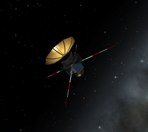

The KSPedia Online
What is KSP
Kerbal Space Program is a single-player sandbox game that allows for players to create what ever they can think of. KSP uses active based physics and orbital mechanics to allow for players to go from planet to planet and land whereever they want or need.
There are many modes in the game with more being added over time. Some are (but not limited to): a career mode were you have to manage funding and damage, there is also a sandbox mode with unlimited money and crew. There is even a custom mission builder for when you want to make your own missions.

The KSP system also has realistic planets, from Kerbin (the earth of the Kerbal universe) to the Mun (Earth's moon) and Eeloo (Pluto). KSP also has many mods made by the games community from Realism overhaul that makes distances realistic to the Kerbal attachment system (KAS). The community also holds challanges such as: fly to the Mun with only solid rocket motors or even make an Single Stage to Orbit (SSTO) to get to Duna (Mars).

The only limit to what you build is your computer and your imagination.